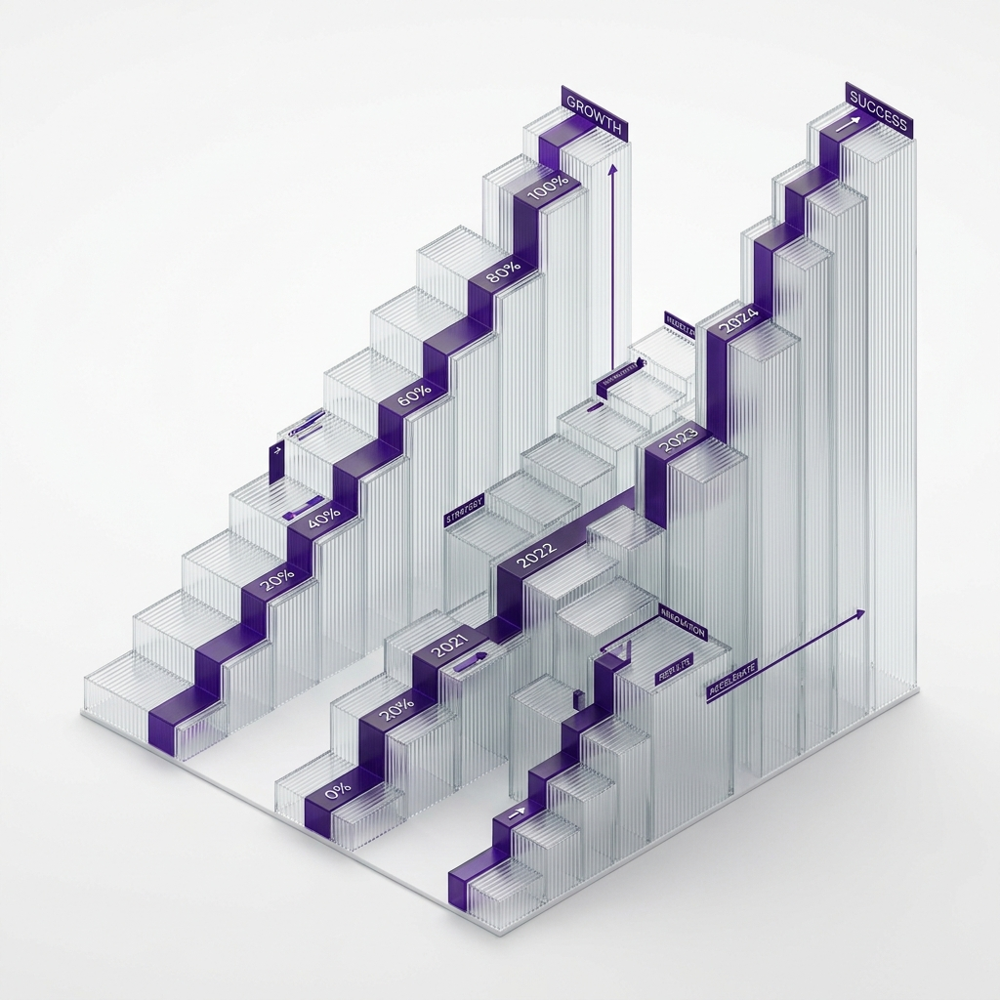

A company generating $10 Million in revenue and breaking through in the market often relies on an operating model built on brute force, the self-sacrifice of Founders, and the unconventional effort of key early hires. The problem with this model? Unfortunately for you, it doesn't scale.
The Dimensional Pain Threshold
There is a measurable barrier between 30 and 50 Million USD, or when passing the standard 50/70 employee headcount. At that level, personal heroism can no longer compensate for a lack of infrastructure.
"Companies that do not shift from 'hero governance' to 'procedural governance' inevitably enter a stationary graveyard."
Recreating Organic Architecture
A dimensional leap forces the entrepreneur to tear up the org chart and layer out their delegations. It's no longer about "knowing how to do everything well," but about designing the company as if it were a complex machine full of indicators that flash long before damage reaches the control room.
The Three Pillars of the Species Leap
- Mapping and destroying dependencies: Processes are rewritten so that teams communicate via "deliverables" (results) and not via "instructions."
- Introducing Functional Middle Management: Inserting bridge figures who know how to read IT but also understand the business, diffusing bottlenecks before they hit the C-Level.
- Coercive automation: CRM and ERP platforms stop being optional. They become the rails upon which the corporate train is physically forced to travel, without any creative derailments.
📖 This article is part of our operational restructuring cluster — the complete guide on how to eliminate bottlenecks and scale without losing control.